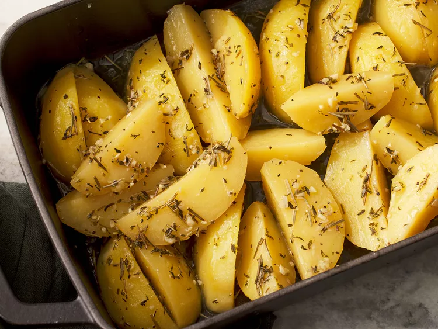

Greek-Style Potatoes

Description
These Greek potatoes are a simple recipe and the close
st I can get to the real thing.The best is that the flavorings can be adjusted to your taste as you bake it —
I sometimes add a little more lemon.These delicious
potatoes are moist and great with green beans and baked chicken with some salsa and feta.
Ingredients
- 6 potatoes, peeled and quartered
- 1 ½ cups water
- ⅓ cup olive oil
- ¼ cup fresh lemon juice
- 2 cloves garlic, finely chopped
- 2 cubes chicken bouillon
- 1 teaspoon dried thyme
- 1 teaspoon dried rosemary
- ground black pepper to taste
Steps
- Preheat the oven to 350 degrees F (175 degrees C).
- Arrange potatoes evenly in the bottom of a medium baking dish.
- Mix together water, olive oil, lemon juice, garlic, bouillon cubes, thyme, rosemary, and pepper in a small bowl. Pour mixture over potatoes.
- Cover and bake in the preheated oven, turning occasionally, until potatoes are tender yet firm, 1 1/2 to 2 hours.